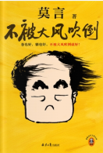
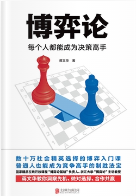
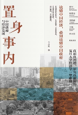
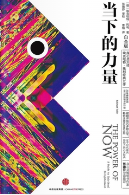
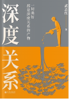
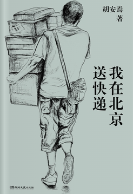

TOP 50/热搜榜
-
1

基层女性
王慧玲
2.6万人今日阅读 | 推荐值80.7% 脍炙人口
因为一条讲述基层女性婚姻困境的短视频，作者从此常驻新浪热搜。在视频中，她用开公司的比喻，讲述了在当下的生育福利...
-
2
不被大风吹倒
莫言
2万人今日阅读 | 推荐值83.5%
卷也好，躺也好，不被大风吹倒就好!莫言新书!聊聊如何面对人生的艰难时刻！本书收录了莫言40篇散文...
-
3
博弈论：每个人都能成为决策高手
蒋文华
6885人今日阅读 | 推荐值72.1% 值得一读
这是一本关于博弈论的入门书。蒋文华认为一个高度联结的社会必然是一个充满博弈的社会。要想在这样的社会里安身立命...
-
4
克林索尔的最后夏天
[德]赫尔曼·黑塞
1412人今日阅读 | 推荐值84.4%
全书包含两个部分。《克林索尔的最后夏天》是黑塞创作于1919年的中篇小说...
-
5
置身事内：中国政府与经济发展
兰小欢
6128人今日阅读 | 推荐值94.7% 神作
本书是复旦大学经济学院教授兰小欢多年教学与研究内容的凝练，将经济学原理与中国经济发展的实践有机融合...
-
6
当下的力量（白金版）
埃克哈特·托利
5242人今日阅读 | 推荐值86.4% 好评如潮
《当下的力量（白金版）》堪称心灵读物经典，作者埃克哈特托利指出了我们日常痛苦的主要来源...
-
7
深度关系
武志红
4429人今日阅读 | 推荐值85.3% 好评如潮
知名心理学者武志红继《为何家会伤人》之后，有关自我、自恋和关系的又一重磅作品...
-
8
我在北京送快递
胡安焉
1384人今日阅读 | 推荐值84.0% 脍炙人口
进入社会工作至今的十年间，胡安焉走南闯北，辗转于广东、广西、云南、上海、北京等地...